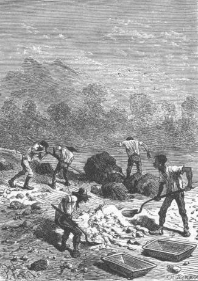
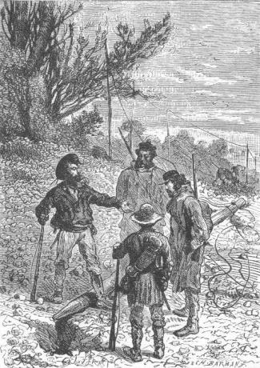
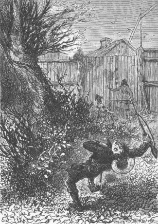

However, the principal preoccupation of the colonists was to conduct a complete exploration of the island, which had been decided upon, an exploration which now had two goals: first, to discover the mysterious being whose existence was no longer in doubt and at the same time, to find out what had become of the pirates, what retreat they had chosen, what life they were leading and what they would have to fear from them.
Cyrus Smith wanted to leave without delay; but for an expedition that would last several days, they would find it convenient to load up the cart with various things needed for the encampments, and with utensils which would make their stopovers easier. Now at this time, one of the onagers had hurt his leg and could not be harnessed; he needed a few days of rest and they could put off the departure for a week without inconvenience, that is to say until the 20th of November. The month of November, under this latitude, corresponds to the month of May in the northern zones. They were therefore in the fine season. The sun had arrived over the Tropic of Capricorn and gave the longest days of the year. The time was hence favorable for the planned expedition which, if it did not attain its main goal, could be fruitful in discoveries, especially from the point of view of the island’s natural productions. Cyrus Smith proposed that they explore those thick forests of the Far West which extended up to the extremity of Serpentine Peninsula.
During the nine days that preceded their departure, it was agreed that they would put the finishing touches on their work on Grand View Plateau.
However it was necessary for Ayrton to return to the corral where the domestic animals needed care. It was decided that he would pass two days there and that he would return to Granite House after having abundantly stocked the stables.
As he was about to leave, Cyrus Smith asked him if he wanted someone to accompany him, making a comment that the island was less secure than before.
Ayrton replied that it wasn’t necessary, that he could do the work alone and that besides, he feared nothing. If some incident occurred at the corral or in the neighborhood, he would immediately inform the colonists with a telegram to Granite House.
Ayrton therefore left on the 9th at daybreak, leading the cart harnessed to only one onager and two hours later the electric bell announced that he had found everything in order at the corral.
During these two days, Cyrus Smith was occupied with a project which would positively protect Granite House from any surprise. His purpose was to completely conceal the upper opening of the old passageway which had already been cemented and half hidden under grass and plants at the southern corner of Lake Grant. Nothing would be easier since it would suffice to raise the level of the lake by two or three feet so that the opening would then be completely submerged.
Now to raise this level, he had only to build a dam at the two trenches of the lake which fed Glycerin Creek and Grand Falls Creek. The colonists were urged on in this work and two dams, not exceeding seven or eight feet in length and three in height, were quickly erected by means of well cemented lumps of rock.

The colonists were urged on in this work.
With this work completed, it was impossible to guess at which point of the lake there existed a subterranean passage through which the overflow had formerly escaped.
It goes without saying that the small diversion of water which served to supply the Granite House reservoir and to drive the elevator had been carefully spared and that there would be no lack of water in any case. Once the elevator was raised, this secure and comfortable retreat defied any surprise attack.
This task moved forward quickly so that Pencroff, Gideon Spilett and Herbert found the time for a trip to Port Balloon. The sailor wanted very much to know if the small cove in which the Bonadventure had been anchored, had been visited by the convicts.
“To be precise,” he noted, “these gentlemen set foot on the southern coast and if they followed the shoreline it is to be feared that they have discovered the little port in which case I would not give a half-dollar for our Bonadventure .”
Pencroff’s apprehensions were not without some foundation and a visit to Port Balloon seemed to be most opportune.
The sailor and his companions therefore left after lunch on the 10th of November and they were well armed. Pencroff, while conspicuously sliding two balls into each barrel of his gun, shook his head, which did not forebode anything good for whoever came too close, be it “man or beast”, as he said. Gideon Spilett and Herbert also took their weapons and at about three o’clock all three left Granite House.
Neb accompanied them just up to the bend in the Mercy and after they passed he raised the bridge. It was agreed that a gunshot would announce the return of the colonists and that at this signal Neb would return to re-establish communication between the two banks of the river.
The small troop advanced directly by the port route toward the southern coast of the island. It was only a distance of three and a half miles but Gideon Spilett and his companions took two hours to traverse it. They probed all along the route which included the edges of the thick forest which bordered on Tadorn’s marsh. They found no trace of the fugitives who doubtless, still not knowing how many colonists there were nor their means of defense, had gone to the less accessible portions of the island.
On reaching Port Balloon, Pencroff saw with extreme satisfaction that the Bonadventure was tranquilly anchored in the narrow creek. Besides, Port Balloon was so well hidden among these high rocks that it could not be discovered neither from land nor from sea, except if one were higher up or within the cove.
“So then,” said Pencroff, “these rascals still have not been here. Tall grass suits reptiles better, and it is evident that we will find them in the Far West.”
“And that is very fortunate because if they had found the Bonadventure,” added Herbert, “they would have taken possession of it and fled, and that would have prevented us from returning soon to Tabor Island.”
“In fact,” replied the reporter, “it is important that we bring a document there which will make known our situation on Lincoln Island and Ayrton’s new residence, in case the Scotch yacht comes to bring him back.”
“Well, the Bonadventure is always there, Mister Spilett,” replied the sailor. “It and its crew are ready to leave at the first signal.”
“I think, Pencroff, that we should do this as soon as our exploration of the island is completed. It is possible, after all, that this stranger, if we succeed in finding him, knows a great deal about Lincoln Island and about Tabor Island. Let us not forget that he is the incontestable author of the document and perhaps he knows about the return of the yacht.”
“A thousand devils!” shouted Pencroff, “can that be so? This person knows us and we do not know him. If he is a simple castaway, why does he hide himself? We are worthy people, I suppose, and the society of worthy people is not disagreeable to anyone. Did he come here voluntarily? Perhaps he leaves the island whenever it pleases him? Is he still here? Is he no longer here?...”
While chatting, Pencroff, Herbert and Gideon Spilett went on board and surveyed the deck of the Bonadventure. The sailor examined the bitt on which he had fastened the anchor cable and suddenly said:
“Ah! Upon my word,” he shouted, “that’s outrageous!”
“What is it, Pencroff?” asked the reporter.
“It was not I who made this knot!”
And Pencroff pointed to the cord which held the cable fast to the bitt itself, to prevent it from getting atrip of the anchor.
“What, it was not you?” asked Gideon Spilett.
“No! I swear it. This is a reef knot and I am in the habit of making a double half-hitch1...”
“You could be mistaken, Pencroff.”
“I am not mistaken,” affirmed the sailor. “The hand does it naturally and the hand is not mistaken.”
“Then have the convicts been on board?” asked Herbert.
“I know nothing about that,” replied Pencroff, “but this much is certain, that the anchor of the Bonadventure was raised and then lowered anew. And hold on! Here is another proof. The cable of the anchor was payed out and its trimming2 has no wear left at the hawse-hole. I say again that someone used our boat.”
“But if the convicts had helped themselves to it, they would either have ransacked it or fled...”
“Fled!... to where?... to Tabor Island?...” replied Pencroff. “Do you think that they would have taken a chance with such a light boat?”
“Besides, it would be necessary to admit that they know about the islet,” replied the reporter.
“Be it as it may,” said the sailor, “as sure as my name is Bonadventure Pencroff of the Vineyard, our Bonadventure has sailed without us!”
The sailor said this so positively that neither Gideon Spilett nor Herbert could question his word. It was evident that the boat had been moved more or less since Pencroff had brought it to Port Balloon. As to the sailor, he had no doubt that the anchor had been raised and then dropped later to the bottom. Now what was the purpose of these two maneuvers if the boat had not been used for some expedition?
“But how could we not have seen the Bonadventure pass in sight of the island?” noted the reporter, who tried to raise all possible objections.
“Well, Mister Spilett,” replied the sailor, “it would suffice for it to leave at night with a good breeze and in two hours it would be out of sight.”
“Well then,” replied Gideon Spilett, “I ask again what purpose would the convicts have in using the Bonadventure and why, after having used it, would they return it to port?”
“Well, Mister Spilett,” replied the sailor, “let us add that to the list of those inexplicable things and think no more about it. The important thing is that the Bonadventure went and came back. Unfortunately, if the convicts take it a second time, they may not return it to its place.”
“Then Pencroff,” said Herbert, “perhaps it would be prudent to put the Bonadventure in front of Granite House?”
“Yes and no,” replied Pencroff, “or rather no. The mouth of the Mercy is a bad place for a boat and the sea is rough there.”
“But we could haul it up on the sand to the very foot of the Chimneys...”
“Perhaps... yes...,” replied Pencroff. “In any case, since we must leave Granite House for a rather long expedition, I think that the Bonadventure will be more secure here during our absence and that we will do well to leave it here until such time as the island is purged of these rascals.”
“That is also my opinion,” said the reporter. “At least in case of bad weather, it will not be as exposed as it would be at the mouth of the Mercy.”
“But if the convicts come again to pay it a visit!” said Herbert.
“Well, my son,” replied Pencroff, “if they didn’t find it here, they would be quick to look for it in front of Granite House, and during our absence nothing would prevent them from seizing it. I think therefore, as Mister Spilett does, that it should be left at Port Balloon. But when we return, if we have not rid the island of these scoundrels, it would be prudent to bring our boat back to Granite House until such time as we need no longer fear any unpleasant visit.”
“Agreed. Let us be on our way,” said the reporter.
When they returned to Granite House, Pencroff, Herbert and Gideon Spilett let the engineer know what had happened and the latter approved of their arrangement for the present and for the future. He even promised the sailor that he would examine the portion of the channel situated between the islet and the shore in order to see if it would be possible to create an artificial port by means of dams. In this way the Bonadventure would always be within reach, under the colonist’s eyes, and if need be, under lock and key.
That same evening they sent a telegram to Ayrton asking him to bring a couple of goats which Neb wanted to acclimatize to the prairies of the plateau. It was strange that Ayrton did not acknowledge the receipt of the dispatch as he usually did. This did not surprise the engineer. Perhaps at the moment, Ayrton was not at the corral or even on his way back to Granite House. In fact, two days had already passed since his departure and it had been decided that on the 10th toward evening or the morning of the 11th at the latest, he would return.
The colonists therefore waited for Ayrton to show himself at the Grand View heights. Neb and Herbert even waited at the approaches to the bridge in order to lower it as soon as their companion presented himself.
But around ten o’clock in the evening, there was no longer any question about Ayrton. They therefore agreed to send a new dispatch asking for an immediate response.
The Granite House bell remained silent.
The colonists then became very anxious. What had happened? Was Ayrton no longer at the corral or if he was still there, did he no longer have the liberty of his movements? Should they go to the corral on this dark night?
They discussed it. Some wanted to leave, others to stay.
“But,” said Herbert, “perhaps the telegraphic apparatus is broken and is no longer functioning?”
“That may be,” said the reporter.
“Let us wait until tomorrow,” said Cyrus Smith. “It is possible, in fact, that Ayrton has not received our dispatch or even that we have not received his.”
They waited and, as may be imagined, not without a certain anxiety.
At daybreak on the 11th of November, Cyrus Smith again threw the electric current across the wire and received no response.
He tried again: the same result.
“Let’s go to the corral!” he said.
“And well armed,” added Pencroff.
They decided at once that Granite House should not be deserted and that Neb would remain there. After having accompanied his companions to Glycerin Creek, he would raise the bridge and, hiding behind a tree he would watch either for their return or for Ayrton’s return.
In case the pirates presented themselves and tried to cross, he would attempt to stop them with gunfire, and finally he would take refuge inside Granite House where, once the elevator was raised, he would be secure.
Cyrus Smith, Gideon Spilett, Herbert and Pencroff would go directly to the corral and, if they did not find Ayrton there, they would scour the woods in the neighborhood.
At six o’clock in the morning, the engineer and his three companions crossed Glycerin Creek and Neb posted himself behind a slight shoulder which overlooked some large dragon trees on the left bank of the creek.
After having left Grand View Plateau, the colonists immediately took the road to the corral. They carried their guns in their arms ready to fire at the least hostile demonstration. The two carbines and the two rifles had been loaded with ball.
On each side of the road, the woods were thick and could easily hide the malefactors who, thanks to their weapons, would be truly formidable.
The colonists moved quickly and in silence. Top preceded them, sometimes on the road, sometimes making a detour into the woods, but always silent and not appearing to anticipate anything unusual. And they could count on the faithful dog not to leave them in surprise and to bark at the least appearance of danger.
At the same time that they were following the road, Cyrus Smith and his companions were also following the telegraphic wire which linked the corral and Granite House. After travelling for about two miles, they still did not note any break in its continuity. The posts were in good condition, the insulators intact and the wire was properly extended. However, beyond this point, the engineer saw that the tension seemed to diminish and finally at post No. 74, Herbert, who was ahead of the others, stopped and shouted:
“The wire is broken.”
His companions quickened their pace and arrived at the place where the lad had stopped.
There the post was thrown down across the road. The break in the continuity of the wire was thus confirmed and it was evident that the dispatches from Granite House had not been received at the corral nor those of the corral at Granite House.
“It was not the wind that threw over this post,” noted Pencroff.

“It was not the wind that threw over this post.”
“No,” replied Gideon Spilett. “The ground has been dug up around its base and it was uprooted by the hand of man.”
“Besides, the wire is broken,” added Herbert, showing the two ends of the iron wire that had been violently torn apart.
“Is the fracture a recent one?” asked Cyrus Smith.
“Yes,” replied Herbert. “It was certainly ruptured a short time ago.”
“To the corral! to the corral!” shouted the sailor.
The colonists were then midway between Granite House and the corral. Thus there still remained two and a half miles for them to cover. They took to the road.
In fact, it was to be feared that something serious had occurred at the corral. The reason for their anxiety was not the question of the receipt of a telegram from Ayrton but a more inexplicable circumstance, that Ayrton had promised to return on the previous evening and had not done so. Finally, it was not without a motive that all communication had been interrupted between the corral and Granite House and who besides the convicts had any interest in interrupting this communication?
The colonists therefore ran, their hearts gripped with emotion. They were sincerely attached to their new companion. Would they find him wounded by the very men he had once commanded?
Soon they arrived at the place where the road skirted along the small stream leading into Red Creek, which irrigated the prairies of the corral. They then moderated their steps in order not to find themselves out of breath just when a fight might become necessary. The guns did not have their safety catches on but were cocked. Each one surveyed a side of the forest. Top was heard to make some muffled growls which did not auger any good.
Finally the walls of the palisade appeared through the trees. They saw no trace of damage. The door was closed as usual. A profound silence reigned in the corral. Neither the bleating of the sheep nor Ayrton’s voice was heard.
“Let us enter,” said Cyrus Smith.
And the engineer advanced while his companions were on the lookout, twenty feet behind him, ready to fire.
Cyrus Smith lifted the inner latch of the gate and was going to push open one of the swing doors when Top barked violently. A detonation burst out above the palisade and a cry of pain was heard.

A detonation burst out and a cry of pain was heard.
Herbert, struck by a bullet, lay stretched out on the ground!